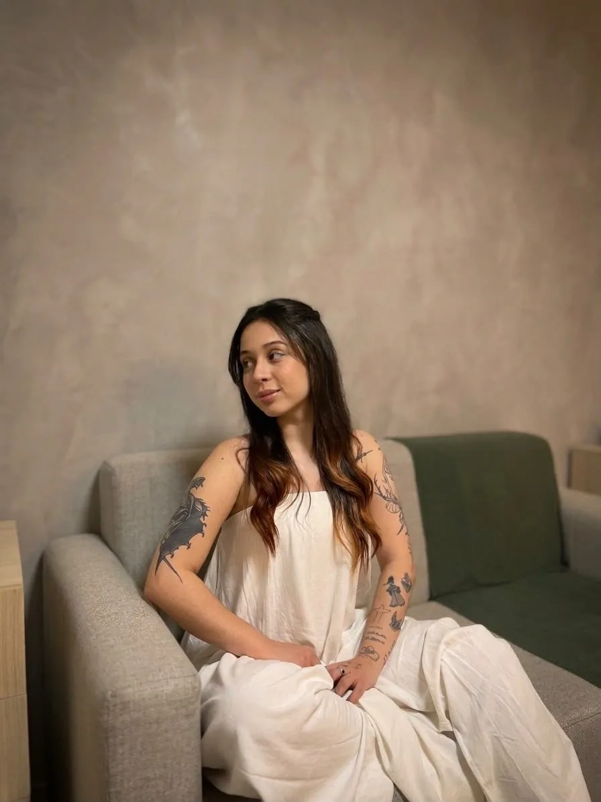
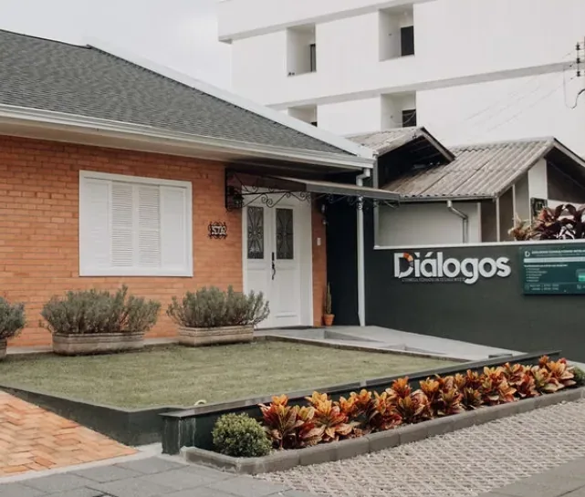
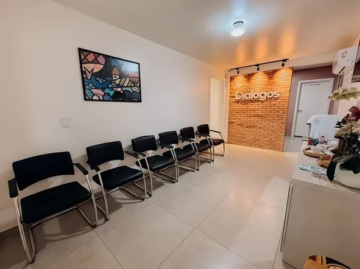
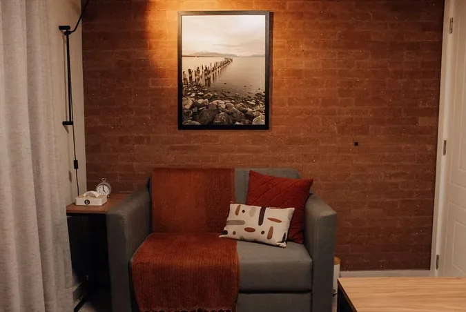
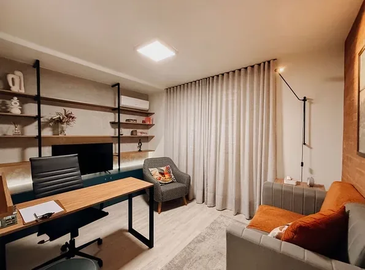

1
Para quem é
Para mulheres que querem se entender melhor, em qualquer momento da vida: transições, relações, sobrecarga, escolhas ou simplesmente a vontade de olhar para si com mais calma. Você não precisa chegar com as respostas prontas.
A vida adulta cobra muito: presença, respostas, clareza sobre quem você é e o que você quer. No meio de tudo isso, algumas coisas ficam presas. Elas aparecem nos relacionamentos que se repetem, nas escolhas que travam, num cansaço que ainda não tem nome.
Freud dizia que aquilo que não encontra palavra acaba achando outro caminho para sair. Se existe um desconforto aí, mesmo difícil de explicar, ele já merece ser escutado.
Para mulheres que querem se entender melhor, em qualquer momento da vida: transições, relações, sobrecarga, escolhas ou simplesmente a vontade de olhar para si com mais calma. Você não precisa chegar com as respostas prontas.
Um processo de escuta e autoconhecimento que acontece no seu tempo. Em vez de fórmulas prontas, a psicanálise abre espaço para você falar com liberdade e, aos poucos, encontrar novos sentidos para a sua história.
Encontros semanais e individuais de 50 minutos, presenciais em Francisco Beltrão ou online. Sem roteiro e sem tema obrigatório: você traz o que apareceu na semana, o que ficou travado ou o que tiver vontade de falar.
Um ponto de partida para a gente se conhecer. Você não precisa chegar com tudo organizado. Juntas, vamos entendendo o que faz sentido olhar primeiro.

Sou psicóloga de orientação psicanalítica e escolhi atender mulheres. Acredito na força que existe quando uma mulher decide dar nome ao que vive.
Meu compromisso é com uma escuta humana, ética e presente, longe de análises frias e de teorias que se afastam das pessoas. O espaço que ofereço é construído a duas mãos, com estudo cuidadoso de cada caso, afeto e respeito pela coragem que é falar sobre si.
Filmes, séries, livros e músicas viram ponte. Uma cena pode ajudar a nomear o que parecia impossível de explicar, e um conceito difícil fica mais próximo quando ganha um rosto conhecido. Algumas obras que atravessam o meu universo:




Na clínica Diálogos: um espaço reservado e tranquilo, pensado para você desacelerar e olhar para a sua história com calma.
Rua Giocondo Felipe, 576 · Vila Nova
Francisco Beltrão, PR
Por videochamada, no Brasil ou no exterior. A mesma escuta, com a praticidade de fazer a sessão em casa ou no intervalo da rotina.
Se a sua pergunta não estiver aqui, pode me mandar pelo WhatsApp.
Se você sente que é hora de olhar para a sua história com mais cuidado, me manda uma mensagem e me conta o que te trouxe até aqui.
Quero agendar minha primeira conversa →